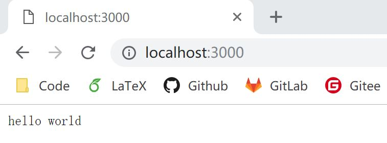

1.1 Hello World
环境准备
- node.js >= 7.6
- npm >= 6.0
Hello World
首先，我们利用 npm 初始化项目的 package.json 文件 可以全部选择默认，更具体的配置选项可以查看 package.json 的介绍
npm init
然后，安装 koa
npm install koa
创建一个 app.js 文件，并写入如下代码：
const koa = require('koa');
const app = new koa();
app.use(async (ctx) => {
ctx.body = 'hello world';
});
app.listen(3000, () => {
console.log('Koa running at port 3000...');
});
接下来，启动我们的 koa server
node app.js
接着我们就可以访问 http://localhost:3000 看到我们的 hello world~ 